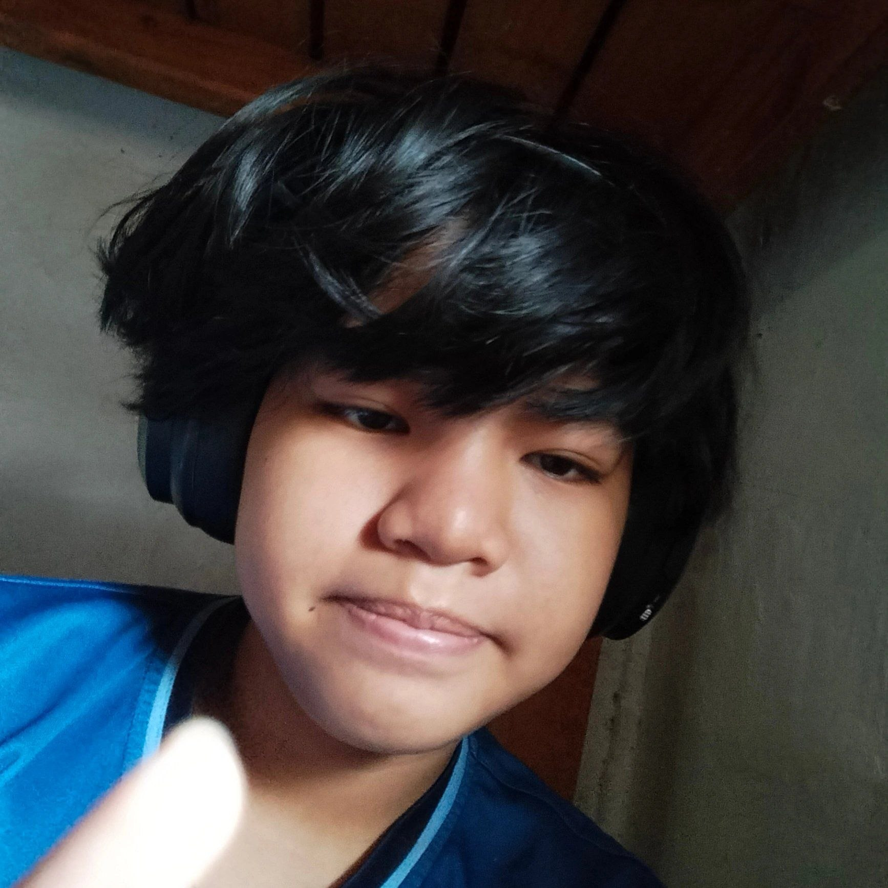

So for this topic it is all about social media and teenagers. All about it's positive and negative effects and how to minimalized these negative effects towards youth like me. This shall open the eyes of those unaware about the events that could occur in social media.
All articles shown will be a summary of all the articles in the updates area of this webpage
It is based on some of my experiences in the internet why I had chosen this topic. Most of the time people I know on the internet would often listen to me more than my parents. They seem to be more of a family than them. Far but actually listens to me and those horrible and explicit experience on social media where all of the sudden inappropriate photos would appear randomly even though I didn't search them.
I love playing video games and using them as inspiration. This so mid in my opinion and I'm not at my best right now. It is not that aesthetic will improve in the future if I have the motivation and add other topics. No one would ever want to listen to me and I hate crying it makes me feel vulnerable. My only wish is that one day this sadness will leave me and let me be happy that someone will soon listen to me. One day I'll be free and I know that and someday someone will accept me like how I accept myself. I hate and love everything that I'm doing. Yeni is tired...
